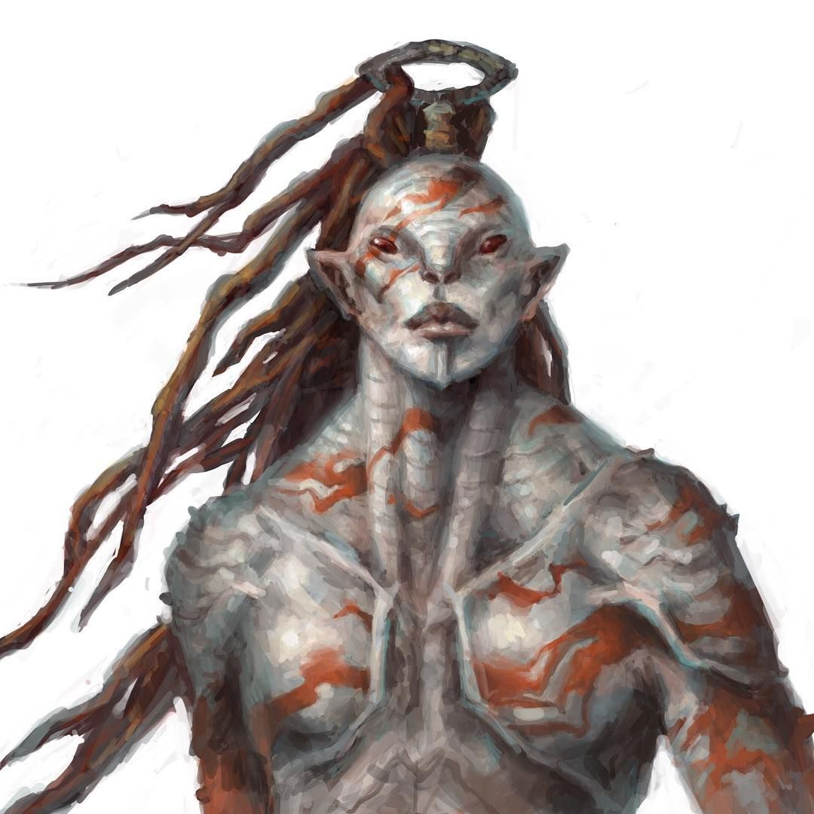
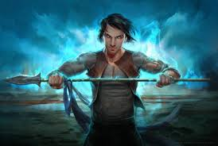
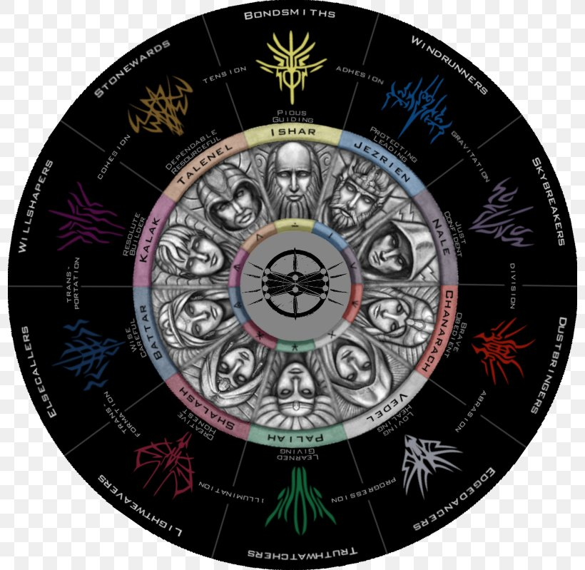
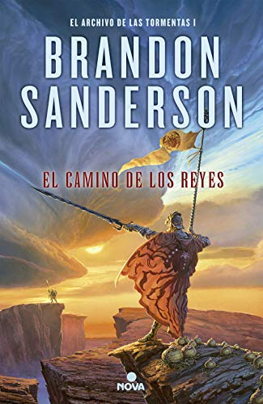
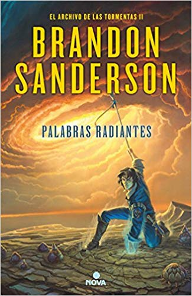
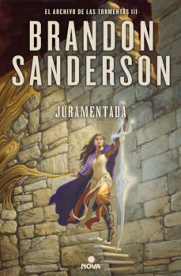

el archivo de las tormentas
En esta tercera parte y la ultima escrita hasta la fecha, Nuestros protagonistas han conseguido llegar a Urithuru la Ciudad de los radiantes, aunque ya estan todos muertos. La historia esta vez se centrara en Dalinar , contando su pasado y su presente en el cual debe conseguir unificar el mundo para enfrentarse a los parshendi de ojos rojos. Por otro parte Shallan interara descrifar los escritos de la ciudad y Kaladin interara descubrir por que los parshendi masacran algunas ciudad y otras no para saber como combatirlos
  Como curiosidad el autor dijo que este es el libro que mas le a costado escribir hasta le fecha pues para el es de los mas importantes de esta Saga ademas de ser su libro de mas duracion
  